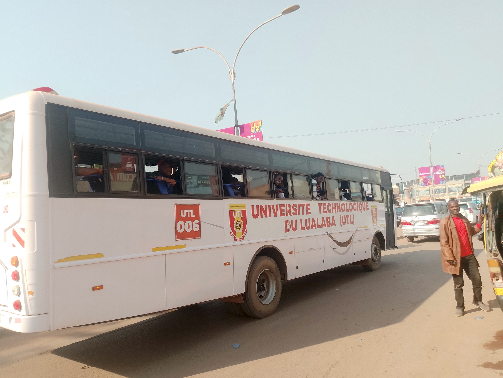

Suivez votre bus en temps réel, recevez les horaires, les notifications et voyagez en toute sécurité avec UTL StudentBus.

Une plateforme moderne pour les étudiants, les chauffeurs et les administrateurs de l'Université Technologique du Lualaba.
Suivez les bus universitaires en temps réel sur une carte interactive.
Recevez des alertes sur les départs, les arrivées et les changements d'itinéraire.
Consultez les trajets, les arrêts et les heures estimées d'arrivée.
Accédez à votre tableau de bord et aux informations de votre bus.
Gérez les trajets et partagez votre position GPS en direct.
Gérez les étudiants, les chauffeurs, les bus et les statistiques de transport.
Une solution moderne pour améliorer le transport universitaire.
UTL StudentBus simplifie la gestion des transports grâce à la géolocalisation, aux notifications en temps réel et à une administration centralisée.
Bus
Étudiants
Chauffeurs
Trajets
Consultez la position des bus universitaires sur une carte interactive.
Visualisez la position de chaque bus directement sur la carte.
Estimation du temps d'arrivée grâce au GPS.
Consultez les itinéraires empruntés par les bus UTL.
Recevez des notifications lors de l'arrivée de votre bus.
"Grâce à UTL StudentBus, je sais exactement quand mon bus arrive."
"Le partage de ma position GPS facilite la communication avec les étudiants."
"L'administration des bus et des étudiants est devenue beaucoup plus simple."
Une question ? Une suggestion ? Notre équipe est à votre disposition.
RN 39, Q/Musompo, Av Malula
Université Technologique du lualaba, Kolwezi, République Démocratique du Congo
contact@utlstudentbus.com
+243 XX XXX XX XX
Connectez-vous à votre espace personnel pour accéder à toutes les fonctionnalités de UTL StudentBus.
Se connecter